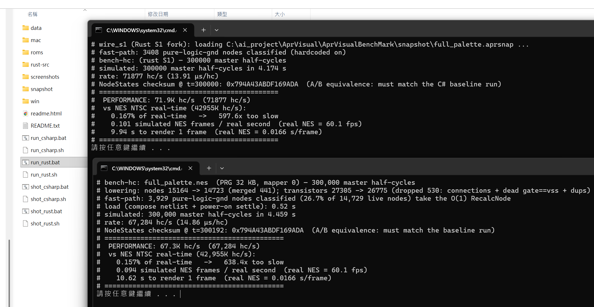

01What AprVisual is — and the wall we hit專案定位 —— 以及我們撞上的牆
AprVisual started from one goal: take Visual6502-style transistor netlists of the NES CPU (2A03) and PPU (2C02) and simulate them exactly at the switch level, while pushing that simulation as close to real time as software possibly can. Pure netlist simulation is a fundamentally heavy thing — the gap to real silicon speed is on the order of hundreds of times, and that gap is essentially algorithmic, not a coding detail.
AprVisual 從一個目標出發:把 NES CPU(2A03)與 PPU(2C02)的 Visual6502 風格電晶體網表,在開關級(switch-level)精確模擬,並把這個模擬盡量推到接近實機速度。純 netlist 模擬本質上非常吃資源 —— 離真實矽晶速度的鴻溝是數百倍等級,而且這個鴻溝是演算法層面的,不是寫法細節。
So the original blueprint was an automated pipeline (fully programmatic, no hand-tuning per chip) that lifts the netlist into higher-level abstractions for speed. Four stages:
所以原本的藍圖是一條自動化流程(全程程式化、不靠逐晶片人工調整),把 netlist 往上抽象化以換取效率。共四個階段:
S1 Switch-level engine — a from-scratch C# rewrite of MetalNES's wire / group-resolution core. The foundation. 開關級引擎 —— 從頭以 C# 重寫 MetalNES 的 wire / group-resolution 核心。整個專案的地基。
S2 Netlist → IR — loop/SCC detection, extract boolean logic into an Expr IR, build an IR interpreter. Netlist → IR —— loop/SCC 偵測,把布林邏輯抽取成 Expr IR,做一個 IR 直譯器。
S3 CPU proof — the IR must be per-node equivalent to S1, and measurably faster than the raw switch-level interpreter. CPU 驗證 —— IR 必須與 S1 逐節點等價,且明顯快於原始開關級直譯器。
S4 Codegen + GPU — emit C++/Verilog + a bit-sliced CUDA/GPU kernel, with per-node equivalence to the CPU IR. Codegen + GPU —— 產生 C++/Verilog + 位元切片的 CUDA/GPU kernel,與 CPU IR 逐節點等價。
The counter-intuitive part反直覺的地方
When you ask an AI — or most software engineers — how to speed this up, the answer is almost always the same: build an IR, do codegen, or throw it on a GPU. We actually built and verified those paths. And we found problems nobody mentioned up front:
當你問 AI —— 或多數軟體工程師 —— 怎麼加速,答案幾乎一致:做 IR、做 codegen、丟 GPU。我們真的把這些路徑實作並驗證了,結果發現一堆當初沒人提到的問題:
- After IR + codegen, the generated code bloats massively. We can automatically extract the netlist into logic gates — it works, in theory and in practice — but the codebase explodes and it runs worse, sometimes slower than just simulating the netlist directly.
- 產生 IR + codegen 之後,程式碼嚴重膨脹。我們確實能自動把 netlist 抽取成邏輯閘 —— 理論與實作都成立 —— 但 codebase 爆炸,而且執行得更糟,有時甚至比直接算 netlist 還慢。
- Information loss, especially around timing and correctness verification, makes the abstracted model hard to trust against the golden switch-level model.
- 抽象化會有資訊喪失問題,尤其是 timing 與正確性驗證,讓抽象後的模型難以對齊開關級 golden model。
- We even auto-generated hardware description languages (Verilog/HLSL) — but the whole point is to solve this in software, not to hand the performance problem to hardware.
- 我們甚至自動產生了硬體描述語言(Verilog/HLSL)—— 但本專案的重點是用軟體解決,不是把效能問題丟給硬體。
- Going further (abstracting gates into components or a behavioral layer) inevitably needs manual intervention and contradicts the project's whole intent: a real, solid hardware simulation. Keep abstracting and you've lost the point.
- 再往上抽象(把邏輯閘變成元件或行為層)勢必要人工介入,而且和專案初衷衝突:我們要的是真實紮實的硬體模擬。一直抽象下去就失去意義了。
Current direction: push S1 — the pure switch-level engine — to its absolute limit. The IR/codegen path is parked, not deleted; it's a verified dead-end for the performance goal, not for correctness.目前方向:把 S1 —— 純開關級引擎 —— 推到極致。IR/codegen 路徑是擱置、不是刪除;它對效能目標是已驗證的死路,但對正確性不是。
So what's actually new here?那這個專案到底新在哪?
The building blocks are classic: switch-level resolution (Bryant's model), event-driven vs levelized/oblivious simulation, "lowering" (constant-folding, dead-gate elimination, structural reduction), and "fast-path" common-case specialization are all well-studied — we invented none of them. But the work is not all one thing. Measured against decades of prior art, our changes fall into three honest tiers, and we label each as what it is — not all engineering, and not all novel either.
基礎元件都是經典的:開關級解析(Bryant 模型)、event-driven 對 levelized/oblivious 模擬、"lowering"(常數摺疊、死閘消除、結構化簡)、"fast-path" 常見情況特化,全是被充分研究過的點子 —— 我們沒發明其中任何一個。但這個專案的工作並非全屬同一層。對照數十年的既有文獻,我們的改動落在三個誠實的層級,而我們據實標示每一項是哪一種 —— 不是全部都只是工程,也不是全部都新。
Engineering (no novelty claimed) — the unmanaged structure-of-arrays layout, the double-buffered wave queues, the static singleton fast path, conjunct reordering, the supply-skip fold: competent implementation of standard ideas. Variants (a known technique with a specific, bit-exact twist) — the dynamic-singleton early-out (R-1) and the two-node pair path (B1), i.e. runtime cardinality specialization; the same-state pre-queue prune (P-1); and the class-major range-prune, a load-time inspector–executor data reorg. Original, to our knowledge — (a) the capacitance-dominance un-taint (P-3/P-4): a proof that a node which can never win the floating-charge tie-break can never change a resolved value, used to delete provably-null events safely; and (b) the self-captured first-touch relayout and its "order, not density" finding — the layout that actually pays is the one matching the pruned cascade's real access order, not the one with the fewest cache misses.
工程實作(不主張新穎)—— 非託管 SoA 佈局、雙緩衝波佇列、靜態 singleton fast-path、合取項重排、supply-skip 摺疊:把標準點子做紮實。變體(已知技術帶上特定、且位元精確的轉折)—— 動態 singleton 早退(R-1)與兩節點 pair path(B1),即執行期基數特化;同態入列前剪枝(P-1);以及 class-major 區間剪枝,一種載入期的 inspector–executor 資料重排。就我們所知為獨立貢獻——(a)電容支配解除汙染(P-3/P-4):證明「永遠贏不了浮接電荷 tie-break 的節點,永遠改變不了已解析的值」,用來安全地刪除可證明為空的事件;(b)自我捕捉初次觸碰重佈局及其「順序,不是密度」發現 —— 真正有用的佈局,是吻合已剪枝級聯實際存取順序的那個,而不是 cache miss 最少的那個。
What ties the three tiers together is the measurement discipline. Every change was validated on a real, full NES netlist — cross-checked on two independent engines (C# + Rust, bit-identical) and measured change by change — because most "obviously better" ideas lost on real hardware. R-1 is the cleanest example: by measuring rather than assuming, we found ~51% of all node re-evaluations are dynamic singletons, half the work avoidable — breaking a ceiling we (and our own earlier analysis) had already written up as "reached". The few ideas that survived, the honest tier label on each, and the catalogue of why the rest failed are the real contribution. Full breakdown: the prior-art comparison.把三個層級綁在一起的,是量測紀律。每一項改動都在一顆真實、完整的 NES netlist 上驗證 —— 兩個獨立引擎(C# + Rust,位元相同)交叉驗證、逐項實測 —— 因為多數「明明更好」的點子在真實硬體上都輸了。R-1 是最清楚的例子:靠實測而非假設,我們發現約 51% 的節點重算其實是動態 singleton、一半工作可省 —— 打破了我們(及自己先前分析)早已寫成「已到頂」的天花板。少數活下來的點子、每一項誠實的層級標示、以及「其餘為何失敗」的清單,才是真正的貢獻。完整對照:先前工作對照。
01·5What actually runs as transistors實際吃網表的部分 & 總規模
Staying honest about fidelity matters, so here's exactly what is simulated as a real transistor netlist versus a software behavioral model. Every NES internal logic chip runs 100% transistor netlist — the CPU, the PPU, all four board TTL chips, and both controllers. Only memory cell arrays, the master oscillator, and the video output are behavioral.
對「模擬到多真」保持誠實很重要,所以這裡明確列出哪些是真電晶體網表、哪些是軟體行為模型。所有 NES 內部邏輯晶片 100% 跑電晶體網表 —— CPU、PPU、四顆主機板 TTL、兩個手把。只有記憶體的儲存陣列、主振盪器、影像輸出是行為模型。
| Component元件 | Simulation模擬方式 | Transistors電晶體數 |
|---|---|---|
| 2C02 (PPU) | ✅ transistor netlist✅ 電晶體網表 | 16,794 |
| 2A03 (CPU, modified 6502 + APU) | ✅ transistor netlist✅ 電晶體網表 | 10,946 |
| 2× controllers (nes-pad → 4021 → 8× pslatch) | ✅ transistor netlist✅ 電晶體網表 | 352 |
| 74LS373 (address latch) | ✅ transistor netlist✅ 電晶體網表 | 82 |
| 74LS139 (address decode) | ✅ transistor netlist✅ 電晶體網表 | 38 |
| 2× 74LS368 (controller tri-state buffers) | ✅ transistor netlist✅ 電晶體網表 | 28 |
| 74HC04 (PPU A13 inverter) | ✅ transistor netlist✅ 電晶體網表 | 6 |
| RAM / VRAM / PRG / CHR ROM | 🔧 hybrid: control pins netlist + cell array behavioral🔧 hybrid:控制腳網表 + 陣列行為 | ~68 (pins only)~68(僅控制腳) |
| CIC (nes-cic1) | ⚠️ stub — reset inverter only, not a real lockout chip⚠️ stub —— 只是 reset 反相器,非真鎖區晶片 | 1 |
| clock / video output主時鐘 / 影像輸出 | 🔧 pure software handler🔧 純軟體 handler | — |
- The PPU and CPU alone are ~98% of all transistors; every TTL chip, controller, CIC and memory control-pin together is under 2%.
- 光是 PPU + CPU 就佔 ~98%;所有 TTL、手把、CIC、記憶體控制腳加起來不到 2%。
- Memory cell arrays (2 KB ×2 RAM/VRAM, 32 KB PRG, 8 KB CHR, optional 8 KB work RAM) are not counted — they're behavioral byte arrays. Simulating them as real 6T cells would add hundreds of thousands of transistors.
- 記憶體的儲存陣列(2 KB×2 RAM/VRAM、32 KB PRG、8 KB CHR、選用的 8 KB 工作 RAM)不計入 —— 它們是行為 byte 陣列。若真用 6T cell 模擬會多出數十萬顆電晶體。
- CIC is a 1-transistor reset-inverter stub, not a real region-lockout chip — NROM doesn't need lockout, so its 4-bit MCU was never modelled.
- CIC 只是 1 顆電晶體的 reset 反相殘樁,不是真的鎖區晶片 —— NROM 不需要鎖區,所以它的 4-bit MCU 從沒被模擬。
- After S1.5 lowering (merge always-on shorts, drop dead transistors, dedup), the engine actually simulates 26,775 transistors over 14,723 nodes — that's the real per-half-cycle workload.
- 經 S1.5 lowering(合併永遠導通短路、去死電晶體、dedup)後,引擎實際模擬的是 26,775 顆電晶體、14,723 個節點 —— 這才是每半週期真正的工作量。
Could this be smaller — a future speed-up? Possibly. Fewer nodes means smaller hot arrays and fewer that can ever go dirty, so shrinking the netlist itself is a candidate breakthrough. But the easy, safe cuts are already taken (the lowering above). Going deeper — folding constant / supply-tied nodes, collapsing logic-equivalent sub-networks — runs straight into the correctness traps that sank earlier attempts: cross-coupled latches with two stable states (which made prune-merge render a black screen) and the floating-capacitance tie-break (which "dead-end skip" broke). So it's a real but delicate avenue — any further reduction must be proven per-node equivalent and verified against a PPU visual frame, not just a CPU checksum.這還能更小嗎 —— 日後的速度突破口?有可能。節點少代表熱陣列更小、能變髒的節點更少,所以把 netlist 本身縮小是個候選突破點。但容易又安全的縮減已經撿光了(上面的 lowering)。再往下 —— 折疊常數 / 接電源的節點、收合邏輯等價子網路 —— 會直接撞上葬送先前嘗試的正確性陷阱:有兩個穩態的 cross-coupled latch(就是讓 prune-merge 渲染黑屏的元兇),以及 floating 電容 tie-break(「dead-end skip」踩的雷)。所以這是真實但細膩的方向 —— 任何進一步縮減都必須證明逐節點等價,並且用 PPU 畫面實圖驗證,而不只是 CPU checksum。
02What worked, what didn't — the interesting part過程心得 —— 有趣的部分
S1's base is an equivalent reimplementation of large parts of MetalNES — specifically its wire_compute group-resolution core, which is itself an optimized port of Visual6502's chipsim. On top of that foundation we ran a long campaign of optimization strategies. They split into two layers, and both are full of results that contradict intuition.
S1 的基礎是大量等價重寫 MetalNES —— 特別是它的 wire_compute group-resolution 核心(而那本身又是 Visual6502 chipsim 的最佳化移植)。在這個基礎上,我們跑了一長串優化策略,分成兩個層面,而兩邊都充滿反直覺的結果。
Built on MetalNES — what S1 actually adds on top建立在 MetalNES 之上 —— S1 額外加了哪些有效處理
S1 faithfully reproduces MetalNES's golden core — the connected-group BFS resolution, the 256-entry flags→state lookup table, the per-node c1c2/gnd/pwr transistor sub-lists with early-break, and the largest-capacitance float tie-break. Those are MetalNES's, ported as-is. On top of that, S1 adds these processing-level optimizations, each verified bit-identical to the un-optimized model:
S1 忠實重現了 MetalNES 的 golden core —— connected-group BFS 解析、256 項 flags→state 查表、每節點 c1c2/gnd/pwr 電晶體子列表(含 early-break)、以及最大電容的 float tie-break。這些是 MetalNES 的,原樣移植。在這之上,S1 額外加了以下處理層級的優化,每一項都驗證過與未優化模型位元完全相同:
| S1 additionS1 額外做的 | vs MetalNES對比 MetalNES |
|---|---|
| Pure-logic fast-path純邏輯 fast-path | O(1) resolve for ~27% of nodes that provably form a singleton group — skips the BFS entirely. MetalNES runs the full group walk for every node.對 ~27% 必為單節點 group 的節點做 O(1) 解析 —— 完全跳過 BFS。MetalNES 對每個節點都跑完整 group walk。 |
| S1.5 lowering pre-passS1.5 lowering 前置 | Before simulating: union-find merge of always-on shorts, drop dead (gate=GND) transistors, dedup + dense compaction → 15,164→14,723 nodes, 27,305→26,775 transistors. MetalNES simulates the raw assembled netlist.模擬前:union-find 合併永遠導通短路、移除死(gate=GND)電晶體、dedup + 緻密重編號 → 15,164→14,723 節點、27,305→26,775 電晶體。MetalNES 直接模擬組裝後的原始 netlist。 |
| O(1) in-group dedupO(1) group 去重 | A per-node _inGroup flag. MetalNES linearly scans the whole current group on every node add.用每節點一個 _inGroup 旗標。MetalNES 每加一個節點都線性掃描整個當前 group。 |
| Deferred capacitance read延後讀電容值 | MetalNES updates max-capacitance/state on every node add; S1 defers that read to the rare floating branch (<1% of walks) → +12% on C#.MetalNES 每加一個節點都更新 max-capacitance/state;S1 把它延後到罕見的 floating 分支(<1% 的 walk)→ C# +12%。 |
| Hot-data shrink + SoA熱資料縮減 + SoA | byte states, ushort node ids, hot/cold split packed to a quarter cache line, unmanaged arrays — vs MetalNES's std::vector<node_info> with int fields. The single biggest lever.byte 狀態、ushort 節點 id、hot/cold 拆分壓到 ¼ cache line、unmanaged 陣列 —— 對比 MetalNES 的 std::vector<node_info>(int 欄位)。最大的單一槓桿。 |
| Iterative BFS (C#)iterative BFS(C#) | MetalNES's group walk is recursive; S1 makes it iterative so the .NET JIT inlines the whole chain (+~3% C#). Left recursive on Rust, where LLVM already inlines it.MetalNES 的 group walk 是遞迴;S1 改成 iterative 讓 .NET JIT inline 整條鏈(C# +~3%)。Rust 維持遞迴,因為 LLVM 本來就 inline 得好。 |
| Twin C# + Rust enginesC# + Rust 雙引擎 | Two independent codegens, bit-identical (same checksum) — cross-validation and a built-in performance comparison.兩個獨立 codegen,位元完全相同(checksum 一致)—— 互相驗證,也內建效能對照。 |
So the fast-path and the lowering pre-pass are genuine, effective processing strategies S1 adds beyond the reference — and the biggest later wins (R-1, the P-1 → P-4 event-count prunes) are algorithmic too. The "rare breakthrough" caveat below is only about the broad, blue-sky search for brand-new algorithms (bit-parallel BFS, codegen, parallelism), most of which were dead-ends.
所以 fast-path 與 lowering 前置是 S1 在參考實作之外、真正有效的額外處理策略 —— 而後來最大的幾個勝利(R-1、P-1 → P-4 事件數剪枝)也都是演算法層的。下面那句「突破罕見」只針對大範圍、天馬行空地找全新演算法(bit-parallel BFS、codegen、平行化)的部分,而那些多半是死路。
New here? Switch-level simulation primer →第一次接觸?開關級模擬入門科普 →
MetalNES vs Visual6502 →MetalNES 對 Visual6502 → S1 vs MetalNES →S1 對 MetalNES → Research landscape →研究現況 → Why the "obvious" speedups don't work →直覺加速為何沒用 → Doing less, exactly: the event-count prunes (P-1 → P-4) →精準地少做事:事件數剪枝(P-1 → P-4) → The frontier: why the last 80% won't prune →前緣:為什麼最後 80% 剪不掉 → A correct optimization that still lost (P-5) →一個正確卻仍然輸的優化(P-5) → Is BFS actually faster than DFS? (measured) →BFS 真的比 DFS 快嗎?(實測) → Can a second core help? a real 2-thread split (measured) →第二顆核心能幫上忙嗎?真實雙執行緒切分(實測) → Why IR / codegen still hit the wall (data) →IR / codegen 為何仍撞牆(數據) → Study: when does abstraction beat switch-level? →研究:抽象化何時贏過開關級? → S2 redo: why abstraction still can't beat S1 — the AI predictions, refuted →S2 重戰:抽象化為何仍贏不過 S1 —— 被打臉的 AI 預測 → The dead end that came back: renumbering, from useless to +3.6% →復活的死路:重編號如何從沒用變成 +3.6% → Is it overfit to the NES? 6502 / 6800 / Z80, and language vs algorithm →它只對 NES 過擬合嗎?6502 / 6800 / Z80,以及語言 vs 演算法 → One algorithm, three generations: the lineage + a measured family comparison →一條演算法三代傳承:系譜 + 家族實測比較 → Prior art, honestly: which parts are actually original? →誠實的文獻定位:哪些部分真正原創? → Performance ↔ real-time calculator →效能 ↔ 實機換算器 →
The full lineage: switch-level model (Bryant, 1980s) → Visual6502 (chipsim.js) → MetalNES → AprVisual S1 — an educational walk-through with source-line citations at each step.
完整脈絡:開關級模型(Bryant, 1980s)→ Visual6502(chipsim.js)→ MetalNES → AprVisual S1 —— 教育性導覽,每一段都附源碼行號對照。
Layer A — algorithmic (graph / topology / matrix)A 層 —— 演算法(圖學 / 拓樸 / 矩陣)
This layer ended up holding the project's biggest wins — but of one specific kind: provably reducing the event count on the conduction graph, never a fancier data structure. The fast-path and lowering pre-pass stuck early; then the targeted, profile-driven reductions became the headline breakthroughs — R-1 (dynamic-singleton fast-path, +18%) and the P-1 → P-4 prune family (skip a node re-evaluation when the graph proves it can't change — +11.85%, then ~+8% more, on both engines, bit-exact; see §02·7 and the prunes write-up). What stayed rare was the blue-sky algorithmic search: dozens of mathematically-elegant strategies (bit-parallel BFS, levelization, codegen, multithreading) the AI proposed, implemented and benchmarked, almost all of which lost to engineering reality — and a proof of where the remaining work is irreducible. So the layer's contributions are two: the measured reductions that did win, and the negative catalogue of the elegant ideas that didn't — with exactly why.
這層最後其實握有專案最大的勝利 —— 但只有一種:在導通圖上可證明地減少事件數,而不是更花俏的資料結構。純邏輯 fast-path 與 lowering 前置很早就站住;接著由 profile 驅動、針對性的縮減成了頭條突破 —— R-1(動態 singleton fast-path,+18%)與 P-1 → P-4 剪枝家族(當圖能證明某次節點重算不會改變結果時就跳過 —— +11.85%,再 +約 8%,兩個引擎都成立、bit-exact;見 §02·7 與 剪枝專文)。真正罕見的是天馬行空的演算法搜尋:數十種數學上很漂亮的策略(bit-parallel BFS、levelization、codegen、多執行緒),由 AI 提出、實作、benchmark,幾乎全敗給工程現實 —— 以及一份「剩下的工為何不可削減」的證明。所以這層有兩個貢獻:真正贏的、量測過的縮減,以及那些漂亮卻沒用的點子的負面案例清單 —— 連同確切的原因。
Layer B — programming / compilerB 層 —— 程式設計 / 編譯器
This is the more familiar territory: hot-loop shape, memory layout, branch behaviour, what the JIT/LLVM will and won't do. Many proposals here, AI did the coding and verification. Plenty of "this is obviously better" ideas that turned out worse — and a few real, repeatable wins.
這是比較熟悉的領域:熱迴圈形狀、記憶體佈局、分支行為、JIT/LLVM 會做與不會做的事。這層提了很多構想,由 AI 實作與驗證。一堆「這明明更好」卻變更糟的點子 —— 也有幾個真實、可重現的勝利。
Negative cases (and why they fail)負面案例(以及為何失敗)
- ✗ Multi-threading / per-chip parallelism多執行緒 / 逐晶片平行 — ~15× slower. The simulation settles in tiny waves (the average connected group is ~1.4 nodes); per-wave work is far too small to amortize thread sync, and a barrier every half-cycle dominates. Visual NES's author reported the same lock-contention wall in 2017. 約 慢 15 倍。模擬是以極小的 wave 收斂(平均連通 group 只有 ~1.4 個節點),每個 wave 的工作量遠不足以攤平 thread 同步成本,而每半週期一個 barrier 就主導了一切。Visual NES 作者 2017 年也回報了同樣的 lock contention 牆。
- ✗ Bit-parallel / dense-scan BFS位元平行 / dense-scan BFS — bit-identical results but ~156× slower. Bit-parallel overhead is built for huge frontiers; it crushes the 99% of walks that touch one or two nodes. 結果位元完全相同,但慢約 156 倍。位元平行的成本是為龐大 frontier 設計的,卻被那 99% 只走一兩個節點的小 walk 壓垮。
- ✗ "Dead-end" / unobserved-node skip「死路」/ 未被觀察節點跳過 — broke correctness. A node with no fan-out gates still flows its state into any group it's pulled into — "no observer" was an illusion. 弄壞正確性。一個沒有 fan-out 的節點,只要被拉進某個 group,它的狀態仍會流進去 ——「沒有觀察者」是錯覺。
- ✗ Fancy data structures (hashset, presence arrays, counters)花俏資料結構(hashset、presence array、計數器) — net-negative, matching Visual NES's findings. Maintaining a per-node supply-counter cost −6% because the write path runs ~10× more often than the read it was meant to speed up. 淨負效益,與 Visual NES 的發現一致。維護每節點的 supply 計數器代價 −6%,因為寫入路徑比它想加速的讀取路徑多跑約 10 倍。
- ✗ Levelized scheduling分層排程(levelized scheduling) — ordering each settle wave by topological level to cut redundant re-evaluations. It did reduce the work slightly (dirty-set −1.3%, fewer glitches) — but the counting-sort to maintain that order cost −15% hc/s: net negative. Root cause: ~94.5% of the netlist is one giant pass-transistor-coupled SCC, so there's no useful static topological order to exploit. (The structure was the wall, not the idea.) 把每道 settle 波依拓樸層級排序以減少重複評估。它確實稍微降低了運算量(dirty-set −1.3%、突波變少)—— 但維持順序的 counting-sort 代價是 −15% hc/s:淨負。根因:這顆 netlist 約 94.5% 是同一個 pass-transistor 耦合的大 SCC,沒有有效的靜態拓樸序可利用。(牆是結構,不是這個點子本身。)
- ✗ "Oblivious" full-sweep evaluation「oblivious」全掃描評估 — dropping the dirty-set and recomputing every node each half-cycle. Measured ~121× slower: it re-evaluates ~14,700 nodes (× several sweeps to a fixpoint) when only a few hundred actually changed. The same "recompute everything" cause is exactly why the batch AOT/codegen (~3–6×) and GPU (~10–18×) backends also lost to the event-driven interpreter. 丟掉 dirty-set,每半週期重算所有節點。實測 ~121× 慢:實際只有幾百個節點變動,它卻重算 ~14,700 個(再 ×數趟掃到 fixpoint)。同樣「全部重算」的根因,也正是批次 AOT/codegen(~3–6×)與 GPU(~10–18×)後端輸給事件驅動直譯器的原因。
- ✗ Generation-counter dedup世代計數器去重 — replacing "clear the visited flags" with a monotonic epoch counter to skip the clear. −3.9%: the wider counter and its periodic reset cost more than the per-call clear it removed. 把「清掉 visited 旗標」改成單調遞增的世代計數器以省下清除步驟。−3.9%:較寬的計數器加上它的週期性重置,比它省掉的每次清除還貴。
An important caveat: most of these failures are not flaws in the strategy itself — they're mismatches with the hardware it ran on. A method can be perfectly correct, even more elegant on paper, yet collapse the moment its instruction footprint (i-cache) or working set (d-cache) spills out of cache and starts thrashing. So what failed wasn't the idea — it's that the idea didn't fit this CPU's operating envelope. The flip side is the interesting part: as hardware advances — larger caches, more memory bandwidth — some of these more aggressive strategies could turn out to be exactly the right fit.一個重要的但書:這些策略的失敗,多半不是策略本身有問題,而是它和所跑的硬體不合拍。一個方法可以完全正確、甚至在紙上更優雅,但只要它的指令足跡(i-cache)或工作集(d-cache)一溢出快取、開始顛簸(thrashing),就會崩潰。所以失敗的不是那個點子,而是它剛好不符合這顆 CPU 的使用情境。而反過來才是有意思的地方:哪天硬體更進步 —— 更大的快取、更高的記憶體頻寬 —— 這些較激進的策略,可能反而剛好適用。
Wins (what actually moved the needle)真正有效的
- ✓ Memory shrink記憶體縮減 —
the biggest, most reliable lever.
int → ushort/byte, hot/cold struct splitting (SoA), packing the hot per-node record to a quarter cache line. Keeping the working set in L1d matters more than any clever loop. 最大、最可靠的槓桿。int → ushort/byte、hot/cold 結構拆分(SoA)、把每節點的熱記錄壓到 1/4 cache line。把 working set 留在 L1d 比任何聰明的迴圈都重要。 - ✓ Unlocking the JIT inline cascade解鎖 JIT inline cascade — rewriting the recursive group walk as an iterative loop let the .NET JIT inline the whole chain (+~3% on C#). The exact opposite of helpful on Rust — LLVM already inlines the recursive form. 把遞迴的 group walk 改成 iterative loop,讓 .NET JIT 能 inline 整條鏈(C# +約 3%)。在 Rust 上卻完全相反 —— LLVM 本來就把遞迴形式 inline 得很好。
- ✓ Removing work from the hot loop把工作移出熱迴圈 — deferring a rarely-needed field read out of the per-visit path was +12% on C#; bounds-check elision was +12% on Rust. 把一個很少用到的欄位讀取延後、移出每次拜訪的路徑,C# +12%;Rust 移除 bounds check +12%。
- ✗→✓ A reversal: "prune-merge" failed, then won as P-1一次反轉:prune-merge 先失敗、後以 P-1 兌現 —
skip re-settling when a merge can't change the result. The first try (2026-05-24,
--prune-merge) blanked the PPU — it didn't exclude the chip's dynamic/storage cells — and the "fix" (a runtime group-id, re-stamped every walk) cost more than it saved: −4.4% C# / −6.7% Rust, abandoned as a dead-end. The same idea then shipped bit-exact and +11.85% C# / +11.36% Rust as P-1 — won by a cheap static pull-up mask (one byte, zero runtime bookkeeping) that excludes exactly those memory nodes. The win was never the idea; it was finding the cheapest correct form. (Two root causes — runtime cost + no memory-node exclusion — pointed straight at the fix; full story in the P-1 card & prunes write-up.) 在合併不會改變結果時,跳過重新 settle。第一次嘗試(2026-05-24,--prune-merge)讓 PPU 全黑 —— 它沒排除晶片的動態/記憶體 cell —— 而那個「修法」(執行期 group-id、每次走訪重新蓋章)成本蓋過省下的:C# −4.4% / Rust −6.7%,被當死路放棄。同一個想法後來以 P-1 bit-exact 兌現,C# +11.85% / Rust +11.36% —— 贏在便宜的靜態上拉 mask(一個 byte、零執行期簿記),正好排除那些記憶體節點。贏的從來不是想法,而是找到最便宜又正確的形式。(兩個真因 —— 執行期成本 + 沒排記憶體節點 —— 直接指向正解;完整故事見 P-1 卡片與 剪枝專文。) - ✗→✓ A second reversal: locality renumbering (RCM) failed, then won as range-prune第二次反轉:區域性重編號(RCM)先失敗、後以範圍剪枝兌現 —
As an RCM cache-locality play (2026-05), renumbering measured ~1.04× boot / ~0.98× steady — nothing (the hot set was already cache-resident; even a later near-perfect co-activity packing, −45% line footprint, still moved nothing). The verdict on locality stands. But in June the same permutation machinery was re-aimed at a different objective: sort nodes class-major so each prune class is one contiguous id block, and the hottest loop's
PruneMask[c]lookups — dependent loads sitting on the carried enqueue chain — become register compares. +3.56% C# / +2.90% Rust, bit-exact, on by default — the biggest win since P-1. Same tool, different question: dead ends are indexed by objective, not by tool. (Full story: the dead end that came back & the range-prune card.) 作為 RCM cache 區域性方案(2026-05),重編號實測開機 ~1.04× / 穩態 ~0.98× —— 等於沒用(熱集早已常駐快取;後來連近乎完美的共活性打包 —— line 足跡 −45% —— 也動不了什麼)。對區域性的判決依然成立。但六月,同一套排列機器被重新瞄準另一個目標:把節點以類別為主鍵排序,讓每個剪枝類別佔一段連續 ID 區間,於是最熱迴圈的PruneMask[c]查表 —— 坐在被攜帶的入列鏈上的相依載入 —— 變成暫存器比較。C# +3.56% / Rust +2.90%、bit-exact、預設開啟 —— P-1 以來最大的勝利。同一把工具、不同的問題:死路的索引鍵是目標函數,不是工具。(完整故事:復活的死路與範圍剪枝卡片。)
The meta-lesson: the same change can be +C# and −Rust後設教訓:同一改動可能 +C# 卻 −Rust
A recurring, important finding: an identical source-level change is often a win on one compiler and a loss on the other. Example — widening a fast-path classifier (which adds one branch to the hottest inlined function) measured +0.4–1.3% on C#/.NET-JIT but −1.9–2.5% on Rust/LLVM, because under LLVM's already-tight codegen that one extra branch costs more than the work it saves. Never sync a hot-path change across engines blindly — measure each. And for sub-2% effects, batched A/B is untrustworthy; we use interleaved paired measurement (alternate builds each round) to beat time-drift.
一個反覆出現的重要發現:完全相同的 source-level 改動,常常在一個編譯器是賺、另一個是賠。例如 —— 放寬 fast-path 分類(等於在最熱的 inline 函式多加一個分支),在 C#/.NET-JIT 量到 +0.4~1.3%,在 Rust/LLVM 卻 −1.9~2.5%,因為在 LLVM 已經很緊的 codegen 下,那一個分支的成本超過它省下的工作。絕不要把熱路徑改動盲目同步到兩個引擎 —— 各自實測。而且當效果小於 2% 時,batched A/B 不可信;我們用交錯配對量測(每輪輪流換 build)來打敗時間漂移。
02·7Major algorithm breakthroughs重大演算法突破
A short, curated list of the changes that produced the largest verified speedups — every one bit-identical to the reference model (same NodeStates checksum, confirmed pixel-for-pixel on a rendered PPU frame). The newest headlines — range-prune (the class-major renumber that turned a measured dead end into the biggest win since P-1, on both engines), P-1 (same-state turn-on prune, the first big win to land on both engines at once), M-1 (register-resident group walk + wide loads), S2-A (cache-conscious data layout) and R-1 (dynamic-singleton fast-path) — each broke a ceiling we'd already written up as "reached". The memory-layout techniques behind M-1 and S2-A get a dedicated walk-through in the cache & memory-layout tutorial.
這是一份精選短清單,列出帶來最大、且經驗證加速的改動 —— 每一項都與參考模型位元完全相同(NodeStates checksum 一致,並在實際 PPU 畫格上逐像素確認)。最新的頭條 —— 範圍剪枝(類別為主鍵重編號,把一條被實測判死的死路翻成 P-1 以來最大的勝利,雙引擎成立)、P-1(同態 turn-on 剪枝,第一個同時在兩個引擎都成立的大勝)、M-1(暫存器常駐 group walk + 寬讀取)、S2-A(cache 導向資料佈局)與 R-1(動態 singleton fast-path)—— 各自突破了我們先前已寫成「已到頂」的天花板。M-1 與 S2-A 背後的記憶體佈局技巧,在cache 與記憶體佈局教學裡有專門的逐步說明。
★ Range-prune — class-major renumber turns prune masks into id compares (both engines)★ 範圍剪枝 —— 類別為主鍵重編號,把剪枝遮罩變成 ID 比較(雙引擎) (2026-06-10/11)
+3.56% on C# / +2.90% on Rust — ~119.7K / ~103.1K hc/s at boost, 19-of-20 & 11-of-12 paired (C#), 20-of-20 (Rust), bit-exact (all three golden checksums unchanged), on by default with zero hot-path mode branches. The biggest win since P-1 — and it was born from a measured dead end.
C# +3.56% / Rust +2.90% —— boost 下 ~119.7K / ~103.1K hc/s,C# 配對 19/20 與 11/12、Rust 20/20,位元完全相同(三條 golden checksum 不變),預設開啟、熱路徑零模式分支。P-1 以來最大的勝利 —— 而且它誕生自一條被實測判死的死路。
The hottest loop — SetNodeState's enqueue walk — read a PruneMask[c] byte per transistor endpoint to learn a static fact ("is this node safe to skip?"). L1-resident, but a dependent load sitting on the carried enqueue chain, millions of times per frame. The fix: a static fact doesn't need a lookup — it can live in the node's id. An automatic class-major permutation (two-phase load: classify under identity ids, rebuild permuted) puts each prune class in one contiguous id block, so the checks become register compares: turn-off skip ⇔ c < S (supply ids 1,2 ride the same test), turn-on unsafe ⇔ c < A || c ≥ B. The mask is still computed at every Reset as ground truth and every node is verified against the ranges before the first settle (mismatch ⇒ safe-degenerate: prunes off, still correct); bit-exactness is engineered — the power-on sweep and the checksum walk original id order through the permutation.
最熱的迴圈 —— SetNodeState 的入列走訪 —— 每個電晶體端點都要讀一個 PruneMask[c] byte,只為了知道一個靜態事實(「這個節點能不能安全跳過?」)。它常駐 L1,但是一條坐在被攜帶入列鏈上的相依載入,每張 frame 數百萬次。解法:靜態事實不需要查表 —— 它可以住在節點的 ID 裡。自動的類別為主鍵排列(兩段式載入:先在原始編號下分類、再重排重建)讓每個剪枝類別佔一段連續 ID 區間,檢查變成暫存器比較:turn-off 跳過 ⇔ c < S(supply 1,2 搭同一個比較)、turn-on unsafe ⇔ c < A || c ≥ B。遮罩仍在每次 Reset 算出來當基準真相、第一次 settle 前逐節點驗證(不符 ⇒ 安全退化:剪枝關閉、依然正確);位元等價是設計出來的 —— 開機掃描與 checksum 都透過排列以原始 ID 順序迭代。
Born from a dead end: renumbering was measured useless in May (RCM locality, ~1.0×) — correctly, for that objective. Three follow-up experiments (queue shrink, prefetch, a near-perfect co-activity packing that cut the hot line footprint −45% and still moved nothing) diagnosed the real bound: dependent-load chains, not cache misses. That re-aimed the same tool at deleting chain links instead of improving locality. Cross-engine validation came free — C# (composes the netlist) and Rust (remaps a snapshot) derived byte-identical block boundaries. And the boundary of the formula is mapped too: applying it to the next lookup table (the fast-path class byte) measured neutral, because that load feeds a well-predicted branch instead of the carried chain. The checklist that survives: static fact + hot + on the carried dependency chain. The full revival story →
誕生自死路:重編號五月被實測判定無用(RCM 區域性,~1.0×)—— 對那個目標而言,判得沒錯。三個後續實驗(佇列瘦身、prefetch、近乎完美的共活性打包 —— 熱 line 足跡 −45% 卻依然動不了)診斷出真正的瓶頸:相依載入鏈,不是 cache miss。這把同一把工具重新瞄準成「刪鏈節」而非「改善區域性」。跨引擎驗證免費奉送 —— C#(自組網表)與 Rust(重映射 snapshot)推導出完全相同的區段邊界。公式的邊界也測繪完畢:套用到下一張查表(fast-path 類別 byte)實測中性,因為那條載入餵的是預測良好的分支、不在被攜帶的鏈上。留下的檢查表:靜態事實 + 夠熱 + 在被攜帶的相依鏈上。完整翻盤故事 →
★ P-1 — Same-state turn-on prune (both engines)★ P-1 —— 同態 turn-on 剪枝(雙引擎) (2026-06-07)
+11.85% on C# / +11.36% on Rust — ~99K / ~91K hc/s at boost, 14-of-14 interleaved-paired wins on each, bit-exact. The biggest single win since R-1, and the first major one to land on both engines at once.
C# +11.85% / Rust +11.36% —— boost 下 ~99K / ~91K hc/s,各自 interleaved-paired 14 戰全勝,位元完全相同。自 R-1 以來最大的單一改善,也是第一個同時在兩個引擎都成立的大勝。
The settle loop re-evaluates every node a change can reach. When a transistor turns on and merges two groups that already hold the same logical state, that merge cannot change any value, so the re-evaluation is pure redundant work — skip it. This is sound only when the merged group resolves through the monotone "strongest-driver-wins" rule. It does — except for nodes with no pull-up, which can float and keep their value as stored charge (the capacitance "hold-previous" tie-break). Those are precisely the chip's dynamic logic and memory cells — OAM (sprite) RAM, palette RAM, dynamic CPU nodes — where "same input ⇒ no change" fails because the value is stored state, not a function of the inputs.
settle 迴圈會重算「一個變化能影響到的所有節點」。當電晶體導通、把兩個當下同值的群組接在一起時,這個合併不可能改變任何值,那次重算就是純多餘 —— 跳過。前提是合併後的群組走「最強驅動者勝」這條單調規則。它確實成立 —— 除了沒有上拉的節點,那些會浮接、靠儲存電荷保持值(電容「保持前值」tie-break)。那些剛好就是晶片的動態邏輯與記憶體單元 —— OAM(精靈)RAM、調色盤 RAM、動態 CPU 節點 —— 對它們而言「輸入沒變 ⇒ 結果不變」不成立,因為值是儲存狀態而非輸入的函數。
The fix: a one-time power-on classification tags each node prune-safe or not — safe = it has a pull-up (always statically driven), so any group it joins resolves monotonically; unsafe = no-pull-up (dynamic/storage) or in a special wired-bus group. The hot loop prunes only the ~41% safe nodes. Output stays bit-identical (whole-NES checksum unchanged at 300k and 1M half-cycles; SMB1's title screen pixel-perfect).
解法:開機時做一次分類,標記每個節點可不可剪 —— 可剪 = 有上拉(永遠被靜態驅動),它所在的任何群組都單調解析;不可剪 = 無上拉(動態/儲存)或屬於特殊匯流排群組。熱迴圈只剪約 41% 的可剪節點。輸出維持位元完全相同(整機 checksum 在 30 萬與 100 萬半週期都不變;SMB1 標題畫面像素級正確)。
Why it matters beyond the number: the first naïve attempt (prune whenever the states matched) blanked the screen. A per-node state diff at 100 half-cycles showed the ~50 diverging nodes were all memory cells — which is what pinned down the pull-up rule. The lesson the project keeps re-learning: a negative result, root-caused properly, can hide a positive one — and this is the rare cross-engine win (a genuine reduction in work, not an implementation trick, so it helped C# and Rust alike).
除了數字之外的意義:第一次天真版(只要兩端同值就剪)讓畫面全黑。在 100 個半週期做逐節點狀態 diff,發現分歧的 ~50 個節點全是記憶體單元 —— 這才定位出上拉判準。專案不斷重學的教訓:一個負面結果,只要把根因查清楚,可能藏著一個正面結果 —— 而這是少見的跨引擎勝利(真正減少工作量、不是實作技巧,所以 C# 與 Rust 都受惠)。
And it had failed once before. The same idea shipped — and was reverted — back on 2026-05-24 as --prune-merge. It hit this exact all-black bug, and was "fixed" with a runtime topological check: a per-node group-ID, re-stamped on every group walk, that skipped only when the two ends were already in the same group. Correct — but the bookkeeping (two 64-bit reads per check plus a per-call ID pass) measured −4.4% on C# / −6.7% on Rust, so it was abandoned as a dead-end. P-1 is the very same idea, won by a far cheaper correctness guard: a one-time pull-up safety mask (one byte, zero runtime bookkeeping) that also fires far more often. The real lesson: the win was never the idea — it was finding the cheapest way to make it correct.
而且它曾經失敗過一次。同一個點子早在 2026-05-24 就以 --prune-merge 之名上過、又被退回。它踩到的正是這個一模一樣的全黑雷,當時用執行期拓樸檢查修:每節點一個 group-ID、每次 group walk 重新蓋章,只有兩端本來就同群時才跳。正確 —— 但那套簿記(每次檢查讀兩個 64-bit、外加每次呼叫重配 ID)實測 C# −4.4% / Rust −6.7%,於是被當死路放棄。P-1 是完全相同的點子,贏在便宜太多的正確性判準:開機算一次的上拉遮罩(一個 byte、零執行期簿記),而且觸發頻率還高得多。真正的教訓:贏的從來不是點子本身 —— 是找到最便宜的方式讓它正確。
★ M-1 — Register-resident group walk + wide loads (C#)★ M-1 —— 暫存器常駐 group walk + 寬讀取(C#) (2026-06-04)
+~6% on C# → ~91K hc/s, widening C#'s lead over Rust to ~9%. A batch of four memory-discipline micro-changes to the two hottest functions, each interleaved-paired and bit-exact.
C# +~6% → ~91K hc/s,把 C# 對 Rust 的領先拉開到 ~9%。對兩個最熱函式做的四項記憶體紀律微改,每項都經 interleaved-paired 驗證、位元完全相同。
With S2-A already cache-resident, the remaining cost was instruction-level: the group-BFS re-read its static SoA base pointers (NodeStates, TransistorList, the group buffer…) from memory on every node, and the per-node "add to group" was a separate call. Hoisting those pointers + the group count/flags into locals (so the JIT keeps them in registers across the whole walk) and manual-inlining the add was +3.2% alone. Three more: a ulong dual-pair load reads two (gate,other) transistor entries per 64-bit fetch on the long high-fanout walks (+1.4%); the same wide load in SetNodeState's fan-out (+1.2%); and keeping the fast-path's flag resolution entirely in integer registers — dropping the enum casts and byte accumulators the JIT couldn't fold (+1.2%).
S2-A 已讓資料常駐 cache 後,剩下的成本在指令層:group-BFS 每處理一個節點都從記憶體重讀它的靜態 SoA 基底指標(NodeStates、TransistorList、group buffer…),而逐節點的「加入 group」是一次獨立呼叫。把那些指標 + group 計數/旗標提升進區域變數(讓 JIT 整趟走訪都把它們放在暫存器)、再手動內聯那個 add,單這項就 +3.2%。另外三項:在長的高 fanout 走訪上用 ulong 雙對讀取,每次 64-bit 抓取讀兩筆 (gate,other) 電晶體(+1.4%);同樣的寬讀取用在 SetNodeState 的 fan-out(+1.2%);以及讓 fast-path 的旗標解析全程留在整數暫存器 —— 拿掉 JIT 折不掉的 enum 轉型與 byte 累加器(+1.2%)。
Cross-engine split, as usual: the ulong dual-pair load ported to Rust bigger than on C# (+2.35%) — Rust has no inline-payload split, so every group walk uses the flat list and the wide load applies broadly. But the register-hoist is structural to C#'s iterative BFS: Rust's add_node_to_group is recursive, and hoisting can't span recursion (an iterative rewrite measured −1.3% there), so it doesn't port. The int-register fast-path is a no-op on Rust, which already used u8 flags. Net: the gap widened precisely because the biggest C# win is C#-shaped.
一如往常的跨引擎分歧:ulong 雙對讀取移植到 Rust 反而更大(+2.35%) —— Rust 沒有 inline-payload 拆分,所以每次 group walk 都走平坦清單,寬讀取適用範圍更廣。但暫存器提升屬於 C# 迭代式 BFS 的結構特性:Rust 的 add_node_to_group 是遞迴的,提升無法跨越遞迴(在那邊改寫成迭代量到 −1.3%),所以無法移植。整數暫存器 fast-path 在 Rust 是 no-op,它本來就用 u8 旗標。結果:差距正因為 C# 最大的勝利是「C# 形狀」的而擴大。
★ S2-A — Inline node adjacency (C# data-layout)★ S2-A —— 節點鄰接內聯(C# 資料佈局) (2026-06-01)
+4.18% (S2-A) then +0.8% (S2-A2) on C# → ~80K hc/s, so C# now leads Rust (~76K). Both bit-exact; S2-A 7-of-7 interleaved-paired wins, S2-A2 18-of-27.
C# +4.18%(S2-A)再 +0.8%(S2-A2)→ ~80K hc/s,C# 因此領先 Rust(~76K)。皆位元完全相同;S2-A 配對 7 戰全勝,S2-A2 27 戰 18 勝。
The hot path's real ceiling turned out to be memory latency, not compute: the 73%-singleton check chased NodeInfo → index → a separate transistor array every call — a serialized L2 stall. S2-A packs each node's channel transistors inline into a 32-byte node record, so the common case reads one cache line with no chase. S2-A2 then stops emitting those now-duplicated sub-lists into the flat array, shrinking it and tightening the hot write-back's working set.
熱路徑真正的天花板是記憶體延遲、不是計算:73% 的 singleton 檢查每次都要 NodeInfo → 索引 → 另一條電晶體陣列(序列化 L2 stall)。S2-A 把每個節點的 channel 電晶體內聯進 32-byte 節點記錄,常見情況只讀一條 cache line、不再 chase。S2-A2 再把那些已重複的子表不發進扁平陣列,縮小它、收緊熱寫回的工作集。
C#-only — and that's the policy, not a gap: both layout changes measured negative on Rust (~−5% each), whose tighter LLVM codegen already kept the original layout cache-resident. The two engines stay identical at the algorithm level (bit-exact, same checksum) but each takes its own best implementation — so C# adopts S2-A/S2-A2 and Rust keeps its baseline. The "same change, +C# / −Rust" pattern again.
僅限 C# —— 這是政策、不是缺口:兩個佈局改動在 Rust 都實測為負(各約 −5%),Rust 更緊的 LLVM codegen 本就讓原佈局常駐 cache。兩引擎在演算法層面保持一致(位元相同、checksum 相同),但各取自己最佳實作 —— 所以 C# 採用 S2-A/S2-A2、Rust 維持 baseline。又一次「同一改動 +C# / −Rust」。
★ R-1 — Dynamic-singleton fast-path★ R-1 —— 動態 singleton fast-path (2026-05-31)
+18.6% on C# / +12.5% on Rust — both engines now ~77K hc/s (from ~65K C# / ~69K Rust), 60-of-60 interleaved-paired wins on each, bit-exact.
C# +18.6% / Rust +12.5% —— 兩個引擎現在都 ~77K hc/s(原本 C# ~65K / Rust ~69K),各自 interleaved-paired 60 戰全勝,位元完全相同。
The static pure-logic fast-path only caught nodes that provably form a singleton group (no pass-transistor channels at all — ~27% of nodes). But measurement showed ~51% of all node re-evaluations are dynamic singletons: nodes that do have channels, but whose gate transistors all happen to be off this half-cycle, so the conducting group is still just {self}. Those were running the entire group-BFS (clear → walk → resolve → bookkeeping) only to find one node. R-1 detects them with one cheap channel scan and resolves them in O(1) — for half of every call.
原本的靜態純邏輯 fast-path 只抓「可證明必為單節點 group」的節點(完全沒有 pass-transistor channel —— 約 27%)。但實測發現 約 51% 的節點重算其實是動態 singleton:它們有 channel,只是 gate 電晶體在這個半週期剛好全關,導通 group 仍只有 {自己}。這些原本要走完整 group-BFS(清除 → 走訪 → 解析 → 簿記)才得到一個節點。R-1 用一次便宜的 channel 掃描偵測它們,並以 O(1) 解析 —— 涵蓋每一次呼叫的一半。
Why it matters beyond the number: we had written "the cheap singleton wins are already captured / realistic ceiling ~72–75K" as if it were measured. It wasn't — it was an assumption. Only the static singletons had been captured; the dynamic half hadn't. Implementing the candidate we'd already written off beat that ceiling by ~18%. The lesson the whole project keeps re-learning: measure — don't assume "exhausted".
除了數字之外的意義:我們曾把「便宜的 singleton 已經抓完了 / 實際天花板 ~72–75K」當成量測過的結論寫下來。其實沒有 —— 那是個假設。只有靜態 singleton 被抓到,動態那一半沒有。把我們原本已經放棄的候選實作出來,直接打破天花板約 18%。整個專案不斷重學的教訓:量測 —— 別假設「榨乾了」。
The other confirmed wins其他確認有效的勝利
- ✓ Pure-logic fast-path (static)純邏輯 fast-path(靜態) — O(1) resolve for the ~27% of nodes provably forming a singleton group; skips the BFS entirely. The foundation R-1 extends to the dynamic case. 對 ~27% 可證明為單節點 group 的節點做 O(1) 解析、完全跳過 BFS。R-1 正是把它延伸到動態情形。
- ✓ Hot-data shrink + SoA熱資料縮減 + SoA — byte/ushort fields, hot/cold split packed to a quarter cache line — the single biggest reliable lever (keep the working set in L1d). byte/ushort 欄位、hot/cold 拆到 ¼ cache line —— 最大、最可靠的單一槓桿(把 working set 留在 L1d)。
- ✓ Deferred capacitance read延後讀電容 — move a rarely-needed field read out of the per-visit path → +12% on C#. (Bounds-check elision did the same job on Rust, +12%.) 把很少用到的欄位讀取移出每次拜訪路徑 → C# +12%。(Rust 上由移除 bounds check 達成同樣效果,+12%。)
- ✓ S1.5 lowering pre-passS1.5 lowering 前置 — merge always-on shorts, drop dead transistors, dedup + dense compaction — once, before simulating. 合併永遠導通短路、移除死電晶體、dedup + 緻密重編號 —— 模擬前做一次。
- ✓ Branchless OR-all fast-path scan (C# only)無分支 OR-all fast-path 掃描(僅 C#) — +0.6% on C# by removing a per-gate branch; −3.2% on Rust, so kept C#-only — a clean example of the cross-engine divergence below. 移除每個 gate 的分支,C# +0.6%;Rust −3.2%,故只在 C# 採用 —— 下方「跨引擎反號」的乾淨例子。
Each entry is backed by per-change interleaved-paired A/B numbers and checksums in the repository's optimization notes. R-1 narrowed the gap to NES real-time from ~645× to ~550×, and the wins since — memory-layout, the P-1 same-state turn-on prune, and the P-2 → P-4 event-count prunes (which delete ~21% of all node re-evaluations) — took C# to ~393× — still far off, but the ceiling keeps moving. Run the benchmark on your own CPU and the version stamp (engine + git commit + date) is recorded with your result on the leaderboard.
每一項都有 repo 優化筆記裡逐項的 interleaved-paired A/B 數字與 checksum 佐證。R-1 把距 NES 即時的差距從 ~645× 縮到 ~550×,之後的優化 —— 記憶體佈局、P-1 同態 turn-on 剪枝、以及 P-2 → P-4 事件數剪枝(刪掉約 21% 的節點重算)—— 把 C# 推到 ~393× —— 依然很遠,但天花板持續在移動。在你自己的 CPU 上跑 benchmark,版本戳記(引擎 + git commit + 日期)會跟著你的結果記在排行榜上。
New tutorial — learn the techniques. The two biggest levers above — S2-A's inline layout and the hot-data shrink/SoA — are both really about feeding the cache. We wrote a hands-on walkthrough of the L1/L2/L3 cache concepts and the exact C# memory tricks (struct packing, narrowest element types, flattened adjacency, wide loads), each shown with the real engine code and its measured result — including the ones that backfired. → Memory & L-cache optimization, by example
新教學 —— 學會這些技巧。上面兩個最大的槓桿 —— S2-A 的內聯佈局、熱資料縮減/SoA —— 本質都是餵飽快取。我們寫了一篇實作向導,講 L1/L2/L3 快取觀念 與確切的 C# 記憶體技巧(struct 打包、最窄元素型別、攤平鄰接、寬載入),每一招都附真實引擎程式碼與實測結果 —— 包含那些反效果的。→ 記憶體與 L-cache 優化(用我們的 code 當例子)
For readers from academia — term mapping: what we call "lowering" ≈ logic-synthesis constant-folding / dead-gate elimination / structural reduction; the "fast-path" (and its dynamic extension R-1) ≈ common-case specialization of event-driven simulation. The switch-level model itself is Bryant's; the simulation-strategy taxonomy (event-driven vs levelized vs oblivious) is textbook. We borrow the compiler / systems vocabulary — the equivalent EDA techniques are all classic.給學術背景的讀者 —— 術語對照:我們稱的 "lowering" ≈ 邏輯合成的 constant-folding / dead-gate elimination / 結構化簡;"fast-path"(及其動態延伸 R-1)≈ event-driven 模擬的 common-case 特化。開關級模型本身出自 Bryant;模擬策略分類(event-driven 對 levelized 對 oblivious)是教科書級。我們借用編譯器 / 系統的詞彙 —— 對應的 EDA 技術都是經典。
Read the full research landscape — is the algorithm ceiling reached? →看完整研究現況 —— 演算法天花板到了嗎? →
03Where it stands — and a call to help最終成果 —— 以及邀請
Real time was known to be out of reach from day one. But once the engine got fast enough, it crossed into being a genuinely useful, verifiable tool. The numbers below are our actual run on the dev machine (the screenshot at the bottom of this section), benchmarking 400,000 master half-cycles of full_palette (best of 20, pinned):
從第一天就知道 realtime 達不到。但引擎快到一個程度後,它就跨進「真正可用、可驗證的工具」這個門檻了。以下是我們在開發機上的實際跑分(本節下方的截圖),測試 full_palette 的 400,000 個 master half-cycle(20 次取最佳、已釘核心):
On this machine C# now renders a frame in ~5.2 s and Rust in ~5.7 s (both engines produce a bit-identical result — same checksum 0x794A43ABDF169ADA). The arc: the R-1 dynamic-singleton fast-path lifted both to ~78K; memory-layout wins took C# to ~91K / Rust ~83K; the same-state turn-on prune (P-1) added +11.85% / +11.36%; then a family of event-count prunes (P-2 → P-4) — skip re-evaluating a node when it provably can't change — added another +7.7% on C# / +10.0% on Rust (bit-exact, landed positive on both back-ends); a later profiled &&-clause reorder (lead with the most-often-false test) added +~1% more on C#, then folding the supply-skip into the prune mask (so the turn-off enqueue check is uniform — no special supply guard) added another +~1.5-2% on C#; then moving the build to .NET 11 (runtime/JIT only, bit-exact) added ~+1% more; then range-prune (2026-06-11) — a class-major auto-renumber that turns the prune-mask lookups into id range compares, the dead end that came back — added +3.6% C# / +2.9% Rust; the renumber's locality key became self-captured (2026-06-11) — the load warms the chip and records the TRUE first-touch order of the production cascade through a cold instrumented settle copy, no file, no flag, any ROM — adding +6.2% on C# (20/20 paired, → ~126.7K); and finally the B1 pair path (2026-06-12) — resolve a provably-two-node conducting group inline, skipping the whole group-walk machinery (size-2 groups are 77% of all walks) — added +7–9% on C# at boost (under ~1% at base clock — it deletes dependent-load chain links, so its share grows with frequency) and +14.5% on Rust (20/20 paired; its recursive group walk had been paying a call chain per pair); and finally the falling-writeback split (2026-06-18) — the turn-off fan-out walks a pre-filtered endpoint list built at load (ids below the prune boundary stripped), so the hot loop drops its per-endpoint range compare and iterates a shorter list — added +1.2% C# / +6.9% Rust (bit-exact; the Rust branchless walk had paid that compare on every endpoint, so it gained far more), taking the peaks to ~138.2K / ~126.6K hc/s (best of 20, pinned, cool machine). The prunes delete ~21% of all node re-evaluations at the source. Read how the prunes work → NES NTSC real-time still needs 42,954,552 hc/s, so C# is ~311× short; that remaining gap is exactly why outside ideas and faster machines are valuable.
在這台機器上,C# 現在算一張 frame 要 ~5.2 秒、Rust 要 ~5.7 秒(兩個引擎輸出位元完全相同 —— checksum 同為 0x794A43ABDF169ADA)。歷程:R-1 動態 singleton fast-path 把兩者拉到 ~78K;記憶體佈局優化把 C# 推到 ~91K / Rust ~83K;同態 turn-on 剪枝(P-1)加了 +11.85% / +11.36%;接著一組事件數剪枝(P-2 → P-4) —— 在節點可證明不會變時跳過重算 —— 又加了 C# +7.7% / Rust +10.0%(bit-exact,兩個後端都正);之後再依剖析把 && 條件重排(最常為 false 的判斷排最前)又加了 C# +~1%,接著把供電跳過折進剪枝遮罩(turn-off 入列檢查變得一致、不需特別的供電守衛)又加了 C# +~1.5-2%;接著把 build 換到 .NET 11(只是 runtime/JIT、bit-exact)再加 ~+1%;接著是範圍剪枝(2026-06-11)—— 類別為主鍵的自動重編號,把剪枝遮罩查表變成 ID 區間比較,那條復活的死路 —— 再加 C# +3.6% / Rust +2.9%;重編號的 locality 鍵改成自我捕捉(2026-06-11)—— 載入時先暖機、再用一份冷的儀器化 settle 拷貝記錄生產級串接的「真實首次彈出順序」,零檔案、零旗標、任何 ROM 通用 —— 再加 C# +6.2%(20/20 配對,→ ~126.7K);最後是 B1 成對路徑(2026-06-12)—— 可證明只有兩個節點的導通群組就地解析、跳過整套群組走訪機制(size-2 群組佔全部走訪的 77%)—— C# boost 下 +7~9%(基頻下不到 1% —— 它刪的是相依載入鏈節,佔比隨時脈升高而變大)、Rust +14.5%(20/20 配對;它的遞迴群組走訪本來每一對都在付一條呼叫鏈);最後是下降寫回拆分(2026-06-18)—— turn-off 扇出改走載入時預先過濾的端點清單(低於剪枝邊界的 id 已剔除),熱迴圈省掉每端點的範圍比較、清單也更短 —— 加了 C# +1.2% / Rust +6.9%(bit-exact;Rust 的 branchless 走訪本來每個端點都在付那個比較,所以賺更多),峰值推到 ~138.2K / ~126.6K hc/s(20 次取最佳、已釘核心、涼機)。剪枝從源頭刪掉了約 21% 的節點重算。看剪枝怎麼運作 → NES NTSC 實機仍需每秒 42,954,552 個 hc,所以 C# 還差約 311 倍;這個剩下的差距,正是外部點子與更快機器有價值的原因。
🏆 Latest win — the B1 pair path: +7–9% C# at boost / +14.5% Rust (bit-exact, both engines)🏆 最新突破 —— B1 成對路徑:C# boost 下 +7~9% / Rust +14.5%(bit-exact,雙引擎)
A measured sweep of the fast-path family found one population left: 77% of all group walks are two-node groups (30% of ALL node re-evaluations). The B1 pair path proves the conducting group is exactly {seed, neighbour} — bailing to the full walk before any mutation otherwise — and resolves the pair inline, replicating the walk byte-for-byte (member hash clear, both nodes' supply scans, the floating capacitance tie-break, the writeback order). On Rust it is worth +14.45% (its recursive group walk had been paying a call chain on every pair). On C# the payoff is operating-point-dependent: under ~1% at base clock, +7–9% at boost (2026-06-12 same-day interleaved re-measurement, fully separated distributions) — B1 deletes dependent-load chain links, so its share of the wall clock grows with frequency. A clock-locked session had originally under-read it as +0.6%; that correction is part of the measurement-methodology note below. New peaks ~138.2K C# / ~126.6K Rust, bit-exact through all goldens + an SMB1 10M-half-cycle gate. (Previous wins: range-prune + the self-captured locality key; the P-1 prune family in Major algorithm breakthroughs ↑.)
fast-path 家族的實測清點找到最後一塊母體:全部群組走訪的 77% 是兩節點群組(佔全部節點重算的 30%)。B1 成對路徑先證明導通群組恰好是 {種子, 鄰居}(否則在任何寫入前回退到完整走訪),然後就地解析這一對,逐位元複製走訪行為(成員 hash 清除、兩節點的供電掃描、浮接電容 tie-break、寫回順序)。Rust 賺 +14.45%(它的遞迴群組走訪本來每一對都在付一條呼叫鏈)。C# 的收益隨工作點而變:基頻下不到 1%,boost 下 +7~9%(2026-06-12 同日交錯重測,分布完全分離)—— B1 刪的是相依載入鏈節,所以它佔牆鐘的比例會隨時脈升高而變大。先前一次鎖頻場次曾把它低讀成 +0.6%;這個修正也寫進了下方的量測方法注意事項。新峰值 C# ~138.2K / Rust ~126.6K,全部 golden + SMB1 一千萬半週期門 bit-exact。(前幾個勝利:範圍剪枝 + 自我捕捉 locality 鍵;P-1 剪枝家族見重大演算法突破 ↑。)
The machine these numbers came from這些數字來自的機器
| CPU處理器 | AMD Ryzen 7 3700X — 8 cores / 16 threads, Zen 2, 3.6 GHz base (~4.4 GHz boost)8 核 / 16 緒,Zen 2,3.6 GHz 基頻(~4.4 GHz boost) |
|---|---|
| Cache快取 | L1d 32 KB & L1i 32 KB per core, L2 512 KB per core, L3 32 MB每核 L1d 32 KB、L1i 32 KB,每核 L2 512 KB,L3 32 MB |
| Memory記憶體 | 32 GB DDR4-2133 (4 × 8 GB) |
| OS | Windows 11 Home (build 26200) |
Note: the engine is single-threaded and memory-latency bound — its speed tracks per-core IPC and L1/L2 latency far more than core count, and a faster single core beats more cores here. Because it's latency-bound, throughput scales with CPU clock and varies with boost/thermal state: this engine peaks ~138.2K at boost on a cool machine (~135K typical; ~10% lower on a heat-soaked day; .NET 11 + range-prune + B1, pinned to a P-core) and drops markedly (clock-proportional) when pinned to base 3.6 GHz. The bundled launchers pass --pin by default — they pin the hot thread to one quiet P-core, raise priority and disable EcoQoS, which both lifts the steady-state peak and tightens variance (bit-exact). For trustworthy A/B, use same-day interleaved-paired (or round-robin) runs with the median — single-run absolutes drift too much to compare. Correction (2026-06-12): we previously recommended locking the CPU clock for sub-1% A/B; on our own dev machine the locked state turned out to be unrepresentative (a locked session read a change at +0.6% that same-day interleaved data shows is +7–9% at boost), so we now measure unlocked and treat any locked reading as suspect until cross-checked.註:引擎是單執行緒、且受記憶體延遲限制 —— 速度主要看單核 IPC 與 L1/L2 延遲而非核心數,更快的單核會比更多核心有用。因為是 latency-bound,吞吐量隨 CPU 時脈變動、受 boost/熱影響:本引擎涼機 boost 下峰值 ~138.2K(典型 ~135K;機器熱透的日子會低 ~10%;.NET 11 + 範圍剪枝 + B1,釘在 P-core),鎖定 base 3.6 GHz 則明顯下降(隨時脈成比例)。內建啟動器預設帶 --pin —— 把熱執行緒釘到一顆安靜的 P-core、拉高優先權並關閉 EcoQoS,同時拉高穩態峰值與收斂變異(位元相同)。要可靠比較,請用同日 interleaved-paired(或輪替交錯)取中位數 —— 單跑絕對值漂太大不能比。更正(2026-06-12):我們先前建議 sub-1% 比較要鎖頻;後來發現開發機的鎖頻狀態本身失真(一次鎖頻場次把實際 boost 下 +7~9% 的改動低讀成 +0.6%),現已改為不鎖頻量測,任何鎖頻讀數都需經不鎖頻交錯數據交叉驗證才可信。
Have a faster CPU? Run the benchmark and share your numbers. The package is portable, self-contained (no .NET install), and ships both the C# and Rust engines for Windows + macOS (Apple Silicon).
有更快的 CPU 嗎?跑跑看 benchmark,分享你的數字。套件是可攜、自包含的(不用裝 .NET),同時附上 C# 與 Rust 引擎,支援 Windows + macOS(Apple Silicon)。
⬇ Download AprVisualBenchMark.zip⬇ 下載 AprVisualBenchMark.zip All releases所有版本
Latest release: benchmark-2026.06.19 · engine 270259a · released 2026-06-19 · multi-file self-contained (no single .exe) · built on .NET 11 · NEW: a disasm-driven codegen micro-sweep — 5 bit-exact hot-path wins found by reading the JIT'd x64: hoist the NodeStates base in the fast / cls2-pair paths, fix a missed CSE in SetNodeState (a byte store was forcing a base reload), hoist the per-pop loop invariants, and lazy-load the BFS overflow pointer to kill a register spill (ProcessQueue −217 bytes, ~+0.9% cumulative, all bit-exact — verified by JIT disasm, not wall-clock) · all launchers --pin by default (auto-pin best P-core / macOS QoS; High priority + EcoQoS-off; default 400k hc; JSON records pinned) · C# up to ~138.2K / Rust ~126.6K hc/s (best of 20, boost clock, pinned) · on top of the falling-writeback split, the B1 pair path, range-prune + the self-captured locality key (the dead end that came back), .NET 11, the supply-skip fold, the &&-clause reorder and the P-1 → P-4 event-count prunes (how they work)最新發佈:benchmark-2026.06.19 · 引擎 270259a · 發佈於 2026-06-19 · 多檔 self-contained(非單一 .exe)· 以 .NET 11 編譯 · 新:disasm 驅動的 codegen 微優化 —— 讀 JIT 的 x64 找出的 5 個 bit-exact 熱路徑優化:在 fast / cls2-pair 路徑 hoist NodeStates 基底、修掉 SetNodeState 一處 missed CSE(byte store 逼 JIT 重載基底)、hoist per-pop 迴圈不變量、BFS 溢位指標改 lazy-load 消掉一個暫存器 spill(ProcessQueue −217 bytes、累積 ~+0.9%、全 bit-exact —— 以 JIT disasm 驗證而非 wall-clock)· 所有啟動器預設 --pin(自動釘最佳 P-core / macOS QoS;High 優先權 + 關閉 EcoQoS;預設 400k hc;JSON 記錄 pinned)· C# 最高 ~138.2K / Rust ~126.6K hc/s(20 取最佳、boost 時脈、已釘核心)· 在下降寫回拆分、B1 成對路徑、範圍剪枝 + 自我捕捉 locality 鍵(復活的死路)、.NET 11、供電跳過折入遮罩、&& 條件重排、P-1 → P-4 事件數剪枝之上(運作原理)
📊 Then upload your result to the community leaderboard ↗📊 跑完把結果上傳到社群排行榜 ↗

04How it compares to other netlist NES / 6502 simulators與其他 netlist NES / 6502 模擬器的比較
Speed claims across these projects use different units (6502 clocks, chip steps, trace lines, master half-cycles), so this is not a clean apples-to-apples table — hardware era, tracing, feature completeness and frame definitions all differ. With that caveat, here's the public picture:
這些專案的速度說法單位不同(6502 clock、chip step、trace line、master half-cycle),所以這不是乾淨的同基準比較 —— 硬體年代、tracing、功能完整度、frame 定義都不一樣。帶著這個但書,以下是公開資料的全貌:
| Project專案 | Scope範圍 | Public speed公開速度 | ~ per frame約每 frame |
|---|---|---|---|
| Visual6502 (JS) | 6502 transistor-level6502 電晶體級 | ~1 clock/s (animated) – 250Hz+ (expert)~1 clock/s(動畫)– 250Hz+(expert) | n/a (CPU only) |
| perfect6502 | 6502 NMOS netlist (C)6502 NMOS netlist(C) | ~1/30 of 1MHz 6502 on a 2025 CPU2025 CPU 上約 1MHz 6502 的 1/30 | n/a (CPU only) |
| Visual NES | Visual 2A03 + 2C02 (C++/C#)Visual 2A03 + 2C02(C++/C#) | ~5000Hz (dual-chip), ~7500Hz after data shrink + PGO (2017, old i5)~5000Hz(雙晶片),縮資料 + PGO 後 ~7500Hz(2017,舊 i5) | ~30–60 s |
| MetalNES | full NES-001 board, transistor-level完整 NES-001 主機板,電晶體級 | user/press reports (not a benchmark)使用者/媒體轉述(非 benchmark) | ~1–2 min |
| AprVisual S1 (C#) | NES switch-level, pure BFSNES 開關級,純 BFS | 138.2K hc/s (this machine, 400k hc, .NET 11, pinned, range-prune + self-captured key + B1) | 5.18 s |
| AprVisual rust-s1 | NES switch-level, pure BFSNES 開關級,純 BFS | 126.6K hc/s (this machine, 400k hc, pinned, B1 pair path) | 5.66 s |
Takeaways幾個結論
- Full NES transistor-level software simulation publicly lands in the tens-of-seconds to minutes per frame range — never the FPS range of an ordinary emulator.
- 完整 NES 電晶體級軟體模擬,公開資料都落在每 frame 數十秒到數分鐘的等級 —— 從來不是一般模擬器的 FPS 等級。
- AprVisual's current numbers sit clearly above the public early figures for Visual NES and MetalNES — but note those are from a 2017 i5 (often with tracing) and 2022-era user reports, so it is not a fair head-to-head.
- AprVisual 目前的數字明顯高於 Visual NES 與 MetalNES 的公開早期數字 —— 但那些來自 2017 年的 i5(常帶 tracing)與 2022 年的使用者回報,所以不是公平的正面對決。
- Our experience matches Visual NES's exactly: the hot spot is the recursive group / connected-component search, and data shrink + cache + PGO beat fancier data structures. Independent projects converging on the same conclusion is a strong signal.
- 我們的經驗和 Visual NES 完全吻合:熱點都在遞迴的 group / connected-component 搜尋,而且縮資料 + cache + PGO 勝過更花俏的資料結構。兩個獨立專案得到同樣結論,是很強的訊號。
- perfect6502 shows even a single 6502 netlist, in highly-optimized C on a 2025 CPU, only hits ~1/30 real time — transistor-level exactness is just expensive.
- perfect6502 顯示:即使是單顆 6502 netlist、高度最佳化的 C、2025 CPU,也只有約 1/30 realtime —— 電晶體級的精確就是這麼貴。
Sources: Visual6502 & NESdev wiki, perfect6502 README, Visual NES README + author's 2017 nesdev threads, MetalNES README + press/HN reports. AprVisual figures are this machine's run (full_palette, 300k hc).來源:Visual6502 與 NESdev wiki、perfect6502 README、Visual NES README + 作者 2017 nesdev 討論串、MetalNES README + 媒體/HN 報導。AprVisual 數字為本機實測(full_palette、300k hc)。
Read the full comparison →閱讀完整比較深入頁 →
Per-project breakdowns, the unit caveats, frame-time derivations, and all sources.各專案逐一拆解、單位注意、frame-time 推算、完整來源。